전자기사 (2011-06-12 기출문제)
1과목: 전기자기학
1. 간격에 비해서 충분히 넓은 평행판 콘덴서의 판사이에 비유전율 εs인 유전체를 채우고 외부에서 판에 수직방향으로 전계 E0를 가할 때 분극전하에 의한 전계의 세기는 몇 [V/m]인가?
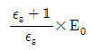
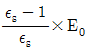
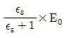
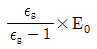
(정답률: 알수없음)

2. 진공 중에 반지름이 4[cm]인 도체구 A와 내외 반지름이 5[cm] 및 10[cm]인 도체구 B를 동심(同心)으로 놓고 도체구 A에 QA=4×10-10 [C]의 전하를 대전시키고 도체구 B의 전하를 0으로 했을 때, 도체구 A의 전위는 약 몇 [V]인가?
- 15
- 30
- 46
- 54
(정답률: 알수없음)
3. 유전율 ε, 전계의 세기 E인 유전체의 단위 체적에 축적되는 에너지는 얼마인가?
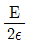
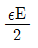
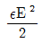
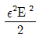
(정답률: 알수없음)
4. 간격이 1.5[m]이고 평행한 무한히 긴 단상 송선선로가 가설되었다. 여기에 6600[V], 3[A]를 송전하면 단위 길이당 작용하는 힘은?
- 1.2×10-3 [N], 흡입력
- 5.89×10-5 [N], 흡입력
- 1.2×10-6 [N], 반발력
- 6.28×10-7 [N], 반발력
(정답률: 알수없음)
5. 자성체에서 자기 감자력은?
- 자화의 세기(J)에 비례한다.
- 감자율(N)에 반비례한다.
- 자계(H)에 반비례한다.
- 투자율(μ)에 비례한다.
(정답률: 알수없음)
6. 전계 E[V/m], 자계 H[A/m]의 전자계가 평면파를 이루고 자유공간으로 전파될 때, 단위시간당 전력밀도는 몇 [W/m2]인가?
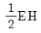
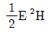
- E2H
- EH
(정답률: 알수없음)
7. 공기 콘덴서의 극판사이에 비유전율 5인 유전체를 넣었을 때, 동일 전위차에 대한 극판의 전하량은 어떻게 되는가?
- 5εo배가 된다.
- 불변이다.
- 5배로 증가한다.
- 1/5로 감소한다.
(정답률: 알수없음)
8. 한 변이 L[m]되는 정방형의 도선회로에 전류 I[A]가 흐르고 있을 때, 회로중심에서의 자속밀도는 몇 [Wb/m2]인가?
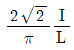
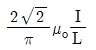
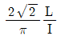
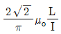
(정답률: 알수없음)
9. N회 감긴 원통 코일의 단면적이 S[m2]이고 길이가 [m]이다. 이 코일의 권수를 반으로 줄이고 인덕턴스는 일정하게 유지하려면 어떻게 하면 되는가?
- 길이를 1/4로 한다.
- 단면적을 2배로 한다.
- 전류의 세기를 2배로 한다.
- 전류의 세기를 4배로 한다.
(정답률: 알수없음)
10. 그림과 같이 반지름 a[m]의 한번 감긴 원형코일이 균일한 자속밀도 B[Wb/m2]인 자계에 놓여 있다. 지금 코일 면을 자계와 나란하게 전류 I[A]를 흘리면 원형코일이 자계로부터 받는 회전 모멘트는 몇 [Nㆍm/rad]인가?
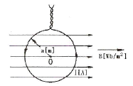
- 2πaBI
- πaBI
- 2πa2BI
- πa2BI
(정답률: 알수없음)
11. 진공 중에서 빛의 속도와 일치하는 전자파의 전파 속도를 얻기 위한 조건은?
- εs = μs = 0
- εs = 0, μs = 1
- εs = μs = 1
- εs와 μs는 관계가 없다.
(정답률: 알수없음)
12. 도체 표면에서 전계 E=Exax+Eyay+Ezaz[V/m]이고, 도체면과 법선방향인 미소길이 dL=dxax+dyay+dzaz[m]일 때, 성립되는 식은?
- Exdx=Eydy
- Eydz=Ezdy
- Exdy=Eydz
- Eydy=Ezdz
(정답률: 알수없음)
13. 자기인덕턴스가 20[mH]인 코일에 0.2[s] 동안 전류가 100[V]로 변할 때, 코일에 유기되는 기전력[V]은 얼마인가?
- 10
- 20
- 30
- 40
(정답률: 알수없음)
14. 환상 솔레노이드 내의 철심 내부의 자계의 세기는 몇 [AT/m]인가? (단, N은 코일 권선수, R은 환상철심의 평균반지름, I는 코일에 흐르는 전류이다.)
- NI
- NI/2πR
- NI/2R
- NI/4πR
(정답률: 알수없음)
15. 다음 중 기자력(Magnetomotive Force)에 대한 설명으로 옳지 않은 것은?
- 전기회로의 기전력에 대응한다.
- 코일에 전류를 흘렸을 때, 전류밀도와 코일의 권수의 곱의 크기와 같다.
- 자기회로의 자기저항과 자속의 곱과 동일하다.
- SI단위는 암페어[A]이다.
(정답률: 알수없음)
16. 점전하 Q[C]에 의한 무한 평면도체의 영상전하는?
- -Q[C]보다 작다.
- Q[C]보다 크다.
- -Q[C]와 같다.
- Q[C]와 같다.
(정답률: 알수없음)
17. 아래의 그림과 같은 자기회로에서 A 부분에만코일을 감아서 전류를 인가할 때의 자기저항과 B부분에만 코일을 감아서 전류를 인가할 때의 자기저항[AT/Wb]을 각각 구하면 어떻게 되는가? (단, 자기저항 R1=1, R2=0.5, R3=0.5[AT/Wb]이다.)
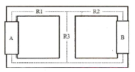
- RA=1.25, RB=0.83
- RA=1.25, RB=1.25
- RA=0.83, RB=0.83
- RA=0.83, RB=1.25
(정답률: 알수없음)
18. 내반경 a[m], 외반경 b[m]인 동축케입르에서 극간 매질의 도전율이 σ[S/m]일 대 단위 길이당 이 동축케이블의 컨덕턴스[S/m]는?
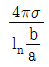
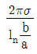
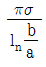
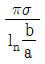
(정답률: 알수없음)
19. 철심이 있는 평균반지름 15[cm]인 환상솔레노이드 코일에 5[A]가 흐를 때, 내부자계의 세기가 1600[AT/m]가 되려면 코일의 권수는 약 몇 회 정도인가?
- 150
- 180
- 300
- 360
(정답률: 알수없음)
20. 자석의 세기 0.2[Wb], 길이 10[cm]인 막대자석의 중심에서 60도의 각을 가지며 40[cm]만큼 떨어진 점 A의 자위는 몇 [A]인가?
- 1.97×103
- 3.96×103
- 7.92×103
- 9.58×103
(정답률: 알수없음)
2과목: 회로이론
21. 다음 중 임피던스와 쌍대 관게가 되는 것은?
- 서셉턴스
- 컨덕턴스
- 어드미턴스
- 리액턴스
(정답률: 알수없음)
22. 두 코일의 인덕턴스가 각각 15[mH], 20[mH]이고 상호 인덕턴스가 2[mH]이면 결합계수가는 약 얼마인가?
- 0.41
- 0.31
- 0.21
- 0.11
(정답률: 알수없음)
23. RL 직렬 회로에서 그 양단에 직류 전압 E를 연결한 다음 한참 후에 스위치 S를 개방하면 L/R 초 후의 전류는 몇 [A]인가?
- 0.2 E/R
- 0.368 E/R
- 0.5 E/R
- 0.632 E/R
(정답률: 알수없음)
24. 다음 회로를 루프해석하기 위한 방정식 Ai=v의 꼴로 정리하였을 때 A 행렬은? (단, i={i1, i2]T 이다.)
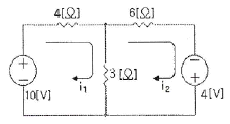
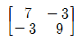
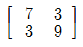
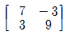
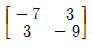
(정답률: 알수없음)
25. 최대 눈금이 50[V]인 직류 전압계가 있다. 이 전압계를 사용하여 150[V]의 전압을 측정하려면 배율기의 저항은 몇 [Ω]을 사용하여야 하는가? (단, 전압계의 내부 저항은 5000[Ω]이다.)
- 10000
- 15000
- 20000
- 25000
(정답률: 알수없음)
26. 구동점 임피던스(driving-point impedance) 함수에 있어서 극(pole)은?
- 아무런 상태도 아니다.
- 개방회로 상태를 의미한다.
- 단락회로 상태를 의미한다.
- 전류가 많이 흐르는 상태를 의미한다.
(정답률: 알수없음)
27. 이상 변압기(Ideal Transformer)에 대한 설명으로 옳지 않은 것은?
- 각 코일의 인덕턴스가 무한대일 것
- 두 코일의 결합 계수가 1일 것
- 종단 임피던스가 무한대일 것
- 코일에 관계되는 손실이 없을 것
(정답률: 알수없음)
28. 임피던스
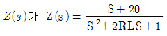
인 2단자 회로에 직류 전원 20[A]를 인가할 때, 이 회로의 단자 전압은?- 20[V]
- 40[V]
- 200[V]
- 400[V]
(정답률: 알수없음)
29. 다음 그림과 같은 파형의 라플라스(Laplace) 변환은?
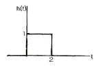
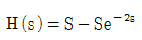
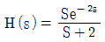
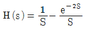
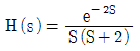
(정답률: 알수없음)
30. 그림의 회로에서 릴레이의 동작 전류는 10[mA], 코일의 저항은 1[kΩ], 인덕턴스는 L[H]이다. S가 닫히고 18[ms] 이내로 이 릴레이가 작동하려면 L[H]은 약 얼마인가?
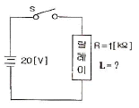
- 26
- 30
- 50
- 68
(정답률: 알수없음)
31. 다음 회로에서 단자 a, b에 나타나는 전압은?
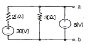
- 8.0[V]
- 14.8[V]
- 16.1[V]
- 18.4[V]
(정답률: 알수없음)
32. 다음 그림에서 i1=16[A], i2=22[A], i3=18[A], i4=27[A]일 때 i5는?
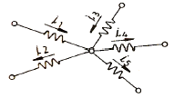
- -7[A]
- -15[A]
- 3[A]
- 7[A]
(정답률: 알수없음)
33. 인덕턴스가 각각 5[H], 3[H]인 두 코일을 같은 방향으로 하여 직렬로 연결하고 인덕턴스를 측정하였더니 15[H]이었다. 두 코일 간의 상호 인덕턴스는 몇 [H]가 되는가?
- 1[H]
- 3[H]
- 3.5[H]
- 7[H]
(정답률: 알수없음)
34. 다음 중 대칭 4단자의 영상 임피던스는?
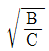
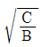
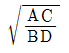
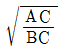
(정답률: 알수없음)
35. 이상적인 평형 3상 △전원에서 옳은 내용은?
- 선간 전압의 크기 = 상전압의 크기
- 상전류의 크기 = √3 ×선간 전류의 크기
- 상전류의 크기 = 선간 전류의 크기
- 선간 전압의 크기 = √3 ×상전압의 크기
(정답률: 알수없음)
36. 그림과 같은 회로가 정저항 회로가 되기 위한 C 값은 몇 [μF]인가? (단, R=1[kΩ], L=100[mH]이다.)
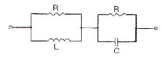
- 0.1[μF]
- 0.2[μF]
- 1[μF]
- 2[μF]
(정답률: 알수없음)
37.
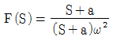
의 역 라플라스 변환은?- eatsin ωt
- e-atsin ωt
- eatcos ωt
- e-atcos ωt
(정답률: 알수없음)
38. 4단자 망에서 하이브리드 ABCD-파라미터에 대한 설명으로 옳은 것은?
- A : 출력개방, 순방향 전압이득
- B : 출력단락, 역방향 전달 어드미턴스
- C : 출력개방, 순방향 전달 인피던스
- D : 출력단락, 역방향 전류이득
(정답률: 알수없음)
39. 그림과 같은 회로에서 테브난 등가 전압은?
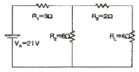
- 10.5[V]
- 14[V]
- 19.5[V]
- 21[V]
(정답률: 알수없음)
40. h 파라미터 중 단락 순방향 전류 이득은?
- h11
- h21
- h12
- h22
(정답률: 알수없음)
3과목: 전자회로
41. RC 결합 증폭기에서 구형파 입력 전압에 대해 그림과 같은 출력이 나온다면 이 증폭기의 주파수 특성에 대한 설명으로 가장 적합한 것은?
- 저역특성이 좋지 않다.
- 중역특성이 좋지 않다.
- 대역폭이 너무 넓다.
- 고역특성이 좋지 않다.
(정답률: 알수없음)
42. 커패시터 필터를 가진 전파 정류 회로에서 맥동 전압을 나타낸 설명 중 옳은 것은?
- 맥동 전압은 부하 저항 및 콘덴서 용량 C에 반비례 한다.
- 맥동 전압은 콘덴서 용량 C에만 반비례 한다.
- 맥동 전압은 부하 저항 및 콘덴서 용량 C에 비례 한다.
- 맥동 전압은 용량 C에만 반비례하고, 부하 저항과는 관계가 없다.
(정답률: 알수없음)
43. 위상 변조(PM) 방식에서 변조 지수는?
- 신호파의 진폭에 비례한다.
- 신호파의 주파수 제곱에 비례한다.
- 신호파의 진폭에 반비례한다.
- 신호파의 주파수에 반비례한다.
(정답률: 알수없음)
44. 수정발진자의 가용량은 Co, 고유주파수는 fs이며, 발진자의 극간의 정전용량은 C, 정전용량을 고려한 주파수를 fp라 할 때, 다음 관계식 중 옳은 것은?
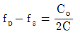
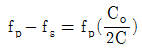
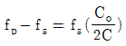
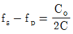
(정답률: 알수없음)
45. 부호기라고도 하며 복수 개의 입력을 대응 2진 코드로 변환하는 조합논리회로를 무엇이라 하는가?
- 디코더
- 인코더
- 플립플롭
- 멀티플렉서
(정답률: 알수없음)
46. 이미터 접지 증폭기에서 ICO= 0.01[mA]이고, IB= 0.2[mA]일 때, 컬렉터 전류는 약 몇 [mA]인가? (단, 이 트랜지스터의 β=50이다.)
- 10.5[mA]
- 12.5[mA]
- 15.1[mA]
- 24.3[mA]
(정답률: 알수없음)
47. 입력 주파수 192[Hz]를 T형 플립플롭 3개에 종속접속하면 출력 주파수는?
- 586[Hz]
- 64[Hz]
- 48[Hz]
- 24[Hz]
(정답률: 50%)
48. 어떤 연산증폭기의 차동이득이 100000이고 동상읻그이 0.2일 때 동상신호제거비(CMRR)는 몇 [dB]인가?
- 104[dB]
- 114[dB]
- 126[dB]
- 136[dB]
(정답률: 알수없음)
49. 턴-오프 시간(turn-off time)은?
- 축적시간과 하강시간의 합이다.
- 상승시간과 지연시간의 합이다.
- 상승시간과 축적시간의 합이다.
- 상승시간과 하강시간의 합이다.
(정답률: 알수없음)
50. 다음 연산회로에서 입력전압이 각각 V1=5[V], V2=10[V]이고, 저항 R1=R2=Rf=10[kΩ]일 때, 출력전압 VO는 몇 [V]인가?
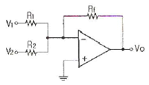
- -5[V]
- 10[V]
- -15[V]
- 20[V]
(정답률: 알수없음)
51. 집적회로의 종류 중 능동소자에 의한 분류에서 바이폴라 소자에 포함되지 않는 것은?
- TTL
- CMOS
- DTL
- HTL
(정답률: 알수없음)
52. 다음과 같은 특성곡선을 갖는 트랜지스터에서 A급으로 작동할 때, 근사적인 β값은 얼마인가?
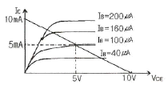
- 10
- 25
- 50
- 100
(정답률: 알수없음)
53. FET 증폭기에서 이득-대역폭(GB) 적을 크게 하려면?
- gm을 크게 한다.
- μ를 작게 한다.
- 부하저항을 작게 한다.
- 분포된 정전용량을 크게 한다.
(정답률: 알수없음)
54. 다음 회로에서 궤환율 β는 약 얼마인가?
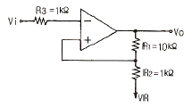
- 0.01
- 0.09
- 0.25
- 0.52
(정답률: 알수없음)
55. 발진회로 구성시 유의사항으로 가장 적합하지 않은 것은?
- 발진소자는 온도편차가 적은 것으로 선정한다.
- 발진회로내의 연결선은 가능한 한 짧아야 좋다.
- 발진주파수는 외부로 많이 방사 되도록 한다.
- 발진회로 주변은 그라운드(Ground)로 차폐한다.
(정답률: 알수없음)
56. 다음 회로에서 제너 다이오드에 흐르는 전류는? (단, 제너 다이오드의 제너 전압은 10[V]이다.)
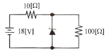
- 0.6[A]
- 0.7[A]
- 0.8[A]
- 1.2[A]
(정답률: 알수없음)
57. 플립플롭으로 10진 카운터를 구성하려고 할 때, 최소 몇 단의 플립플롭이 필요한가?
- 3단
- 4단
- 5단
- 6단
(정답률: 알수없음)
58. 이미터 저항을 가진 이미터 접지 증폭기에서 이미터 저항과 병렬로 연결된 바이패스 커패시터를 제거하면 회로의 상태는?
- 왜곡이 증가할 것이다.
- 회로가 불안정할 것이다.
- 전압이득이 감소할 것이다.
- 주파수 대역폭이 감소할 것이다.
(정답률: 알수없음)
59. FET의 핀치오프(Pinch off) 전압에 대한 설명 중 옳지 않은 것은?
- 핀치오프 전압은 채널(Channel)이 완전히 막히는 상태에 이르는 전압이다.
- 핀치오프 전압은 캐리어(Carrier)의 전하량에 반비례한다.
- 핀치오프 전압은 채널 폭의 자승에 비례한다.
- 핀치오프 전압은 불순물 농도에 비례한다.
(정답률: 알수없음)
60. 다음 중 트랜지스터의 α 차단주파수(fα)에 대한 설명으로 적합하지 않은 것은?
- fα는 베이스 폭에 반비례한다.
- 고주파 트랜지스터에서는 fα가 클수록 좋다.
- fα는 트랜지스터의 물리적 구조에 의해서 결정된다.
- fα는 베이스 영역 내를 확산하는 소수 캐리어의 확산계 수에 비례한다.
(정답률: 알수없음)
4과목: 물리전자공학
61. 균등 전계내 전자의 운동에 관한 설명 중 옳지 않은 것은?
- 전자는 전계와 반대 방향의 일정한 힘을 받는다.
- 전자의 운동 속도는 인가된 전위차 V의 제곱근에 반비례 한다.
- 전계 E에 의한 전자의 운동 에너지는 1/2mv2 [J]이다.
- 전위차 V에 의한 가속전자의 운동 에너지는 eV[J]이다.
(정답률: 알수없음)
62. 다음 중 이동도(μ)의 단위로 옳은 것은?
- cm/Vㆍs
- cm2/Vㆍs
- cm2/s
- cm/s
(정답률: 알수없음)
63. 충분히 높은 주파수의 빛이 금속표면에 가해졌을 때, 그 금속의 표면에서 전자가 방출되는 현상을 무엇이라 하는가?
- 광학 효과(Optical Effect)
- 컴프턴 효과(Compton Effect)
- 애벌런치 효과(Avalanche Effect)
- 광전 효과(Photoelectric Effect)
(정답률: 알수없음)
64. 다음 중 접합형 트랜지스터가 개폐기로 쓰이는 영역은?
- 포화영역과 활성영역
- 활성영역과 차단영역
- 포화영역과 차단영역
- 활성영역과 역할성영역
(정답률: 알수없음)
65. 트랜지스터에서 발생하는 잡음이 아닌 것은?
- 열 잡음
- 산탄 잡음
- 플리커 잡음
- 분배 잡음
(정답률: 알수없음)
66. 실리콘 제어 정류소자(SCR)의 설명으로 옳지 않은 것은?
- 동작원리는 PNPN 다이오드와 같다.
- 일반적으로 사이리스터(thyristor)라고도 한다.
- 게이트 전류에 의하여 방전개시 전압을 제어할 수 있다.
- SCR의 브레이크 오버 전압은 게이트가 차단 상태로 들어가는 전압이다.
(정답률: 알수없음)
67. 전자가 외부의 힘(열, 빛, 전장)을 받아 핵의 구속력으로부터 벗어나 결정 내를 자유로이 이동할 수 있는 자유전자의 상태로 존재하는 에너지대는?
- 충만대(filled band)
- 금지대(forbidden band)
- 가전자대(valence band)
- 전도대(conduction band)
(정답률: 알수없음)
68. 낙뢰와 같이 급격한 서지 전압(Surge Voltage)으로부터 회로를 보호하기 위하여 전원이 인가되는 초단에 주로 사용되는 소자는?
- 서미스터
- 바리스터
- 쇼트키 다이오드
- 제너 다이오드
(정답률: 알수없음)
69. 다음 ( ) 안에 들어갈 내용으로 옳은 것은?
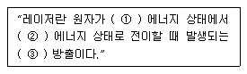
- ① 낮은, ② 높은, ③ 유도
- ① 높은, ② 낮은, ③ 유도
- ① 낮은, ② 높은, ③ 지연
- ① 높은, ② 낮은, ③ 지연
(정답률: 알수없음)
70. 반도체는 절대온도 0[K]에서 절연체, 상온에서 절연체와 도체의 중간적 성질을 띤다. 만일 불순물의 농도가 증가하였을 때, 도전율(σ)과 고유저항(ρ)은 어떻게 되는가?
- 도전율(σ)은 증가하고 고유저항(ρ)은 감소한다.
- 도전율(σ)은 감소하고 고유저항(ρ)은 증가한다.
- 도전율(σ)과 고유저항(ρ) 모두 증가한다.
- 도전율(σ)과 고유저항(ρ) 모두 증가한다.
(정답률: 알수없음)
71. 금속체 내에 있는 전자가 표면장벽을 넘어서 금속 밖으로 방출되기 위하여 필요한 최소의 에너지를 가리키는 것은?
- 광에너지
- 운동에너지
- 페르미준위
- 일함수
(정답률: 알수없음)
72. 기압 1[mmHg] 정도의 글로우 방전(glow discharge)에서 생기는 관내 발광 부분이 아닌 것은?
- 양광주(positive column)
- 부 글로우(negative glow)
- 음극 글로우(cathode glow)
- 패러데이 암부(faraday dark space)
(정답률: 46%)
73. 펀치슬루(punch through) 현상에 대한 설명으로 옳지 않은 것은?
- 베이스 중성영역이 없는 상태이다.
- 컬렉터 역바이어스를 충분히 증가시킨 경우이다.
- 회로에 적당한 직렬저항을 접속하지 않으면 트랜지스터가 파괴된다.
- 베이스 영역의 저항률이 높을수록 펀치슬루 현상을 일으키는 컬렉터 전압은 높아진다.
(정답률: 알수없음)
74. 일정한 자속밀도 B를 가지고 있는 균일한 자계와 수직을 이루는 평면상을 일정한 속도 v로 원운동하고 있는 전자의 회전 주기에 관계없는 것은?
- 자속밀도
- 전자의 전하
- 전자의 질량
- 전자의 속도
(정답률: 알수없음)
75. 다음 중 열평형 상태에 있는 반도체에서 정공(正孔)밀도 p와 전자밀도 n을 곱한 pn적에 관한 설명으로 옳은 것은?
- 온도 및 불순물 밀도의 함수이다.
- 온도 및 금지대 에너지 폭의 함수이다.
- 불순물 밀도 및 Fermi 준위의 함수이다.
- 불순물 밀도 및 금지대 에너지 폭의 함수이다.
(정답률: 알수없음)
76. 반도체 재료의 제조시 고유저항 측정을 가끔 하는 이유는?
- 캐리어의 이동도를 결정하기 때문
- 다결정 재료의 수명 시간을 결정하기 때문
- 진성 반도체의 캐리어 농도를 결정하기 때문
- 불순물 반도체의 캐리어 농도를 결정하기 때문
(정답률: 알수없음)
77. 다음 중 물질에서 전자가 방출할 수 있는 조건으로 적당하지 않은 것은?
- 열을 가한다.
- 빛을 가한다.
- 전계를 가한다.
- 압축한다.
(정답률: 알수없음)
78. 1[Coulomb]의 전하량은 전자 몇 개가 필요한가? (단, e=1.602×10-19[C])
- 6.24×1015
- 6.24×1018
- 6.24×1020
- 6.24×1022
(정답률: 알수없음)
79. 서로 다른 도체로 폐회로를 구성하고 직류 전류를 흐르게 하면, 전류의 방향에 따라 서로 다른 도체 사이의 접합의 한쪽은 가열되는 반면, 또 다른 한쪽은 냉각이 되는 효과를 무엇이라 하는가?
- Peltier Effect
- Seebeck Effect
- Zeeman Effect
- Hall Effect
(정답률: 알수없음)
80. 홀(hall) 효과와 가장 관계가 깊은 것은?
- 고저항 측정기
- 전류계
- 자장계
- 분압계
(정답률: 73%)
5과목: 전자계산기일반
81. 프로그램에 대한 성능을 평가하고 분석하는 것을 무엇이라 하는가?
- bench mark program
- system program
- control program
- scheduler
(정답률: 알수없음)
82. 부동소수점 표현 수들 사이의 곱셈 알고리즘 과정에 해당되지 않는 것은?
- 0(zero)인지 여부를 조사한다.
- 가수의 위치를 조정한다.
- 가수를 곱한다.
- 결과를 정규화 한다.
(정답률: 알수없음)
83. 16진수 CAF.28을 8진수로 고치면?
- 6255.62
- 6255.52
- 6257.32
- 6257.12
(정답률: 60%)
84. Associative 메모리와 관련이 없는 것은?
- CAM(Content Addressable Memory)
- 고속의 Access
- Key 레지스터
- MAR(Memory Address Register)
(정답률: 알수없음)
85. Channel과 DMA에 관한 설명 중 옳지 않은 것은?
- DMA는 하나의 인스트럭션으로 여러 블록을 입출력 할 수 있다.
- DMA 방식은 CPU의 간섭없이 일련의 데이터를 기억장치와 직접 입출력할 수 있는 방식이다.
- Block multiplexer channel은 여러 개의 고속의 장치를 동시에 동작시킬 수 있다.
- Channel은 처리 속도가 빠른 CPU와 처리속도가 늦은 입출력 장치 사이에 발생되는 작업상의 낭비를 줄여준다.
(정답률: 알수없음)
86. 다음 연산의 결과로 옳은 것은?
- MOVE 연산
- Complement 연산
- AND 연산
- OR 연산
(정답률: 알수없음)
87. 명령 인출 사이클(fetch cycle)에 대한 설명으로 옳지 않은 것은?
- machine cycle에 속한다.
- 명령어를 해독하는 과정이 포함된다.
- 반드시 execution cycle에서만 발생한다.
- program counter에서 주소가 MAR로 전달된다.
(정답률: 알수없음)
88. 프로세서는 입출력 모듈로 외부장치의 주소와 입출력 명령을 보낸다. 입출력 명령의 종류가 아닌 것은?
- 제어(control)
- 검사(test)
- 읽기(read)
- 수정(modify)
(정답률: 알수없음)
89. ALU의 기능이 아닌 것은?
- 가산을 한다.
- AND 동작을 한다.
- complement 동작을 한다.
- PC(프로그램카운터)를 1만큼 증가시킨다.
(정답률: 알수없음)
90. 마이크로소프트사에서 Driver 개발을 표준화시키고 호환성을 가지게 하기 위해 만든 드라이버 모델은?
- ISA
- PCI
- OSC
- WDM
(정답률: 알수없음)
91. CPU 클록이 100[MHz]일 때, 인출 사이크(fetch cycle)에 소요되는 시간은?
- 12[ns]
- 24[ns]
- 30[ns]
- 36[ns]
(정답률: 알수없음)
92. memory-mapped I/O 방식의 사용상 특징은?
- 메모리와 입출력 번지 사이의 구별이 없다.
- 입출력 전용 번지가 할당되기 때문에 프로그램의 이해 및 작성이 쉽다.
- 기억장치의 이용효율이 높다.
- 하드웨어가 복잡하다.
(정답률: 알수없음)
93. 컴퓨터에서 물리적인 메모리 주소에 가상 메모리 주소를 배정하는 기법을 무엇이라 하는가?
- interrupt
- mapping
- merging
- overlapping
(정답률: 알수없음)
94. 그 자체로 특수한 곱셈과 나눗셈을 수행하거나 혹은 곱셈과 나눗셈에 보조적으로 이용되는 연산은?
- 논리적 MOVE
- 산술적 Shift
- Rotate
- ADD
(정답률: 알수없음)
95. 컴퓨터의 특징이라고 볼 수 없는 것은?
- 범용성이 우수하다.
- 창의성, 응용성이 있다.
- 데이터 처리를 신속, 정확하게 할 수 있다.
- 대용량의 데이터를 기억, 저장, 처리 할 수 있다.
(정답률: 알수없음)
96. 주소지정방식 중 최소한 두 번 이상 주기억장치를 접근해야 유효주소를 찾을 수 있는 것은?
- 즉시주소지정방식
- 직접주소지정방식
- 간접주소지정방식
- 상대주소지정방식
(정답률: 알수없음)
97. 확장 보드나 소프트웨어가 입출력하는 버스의 점유권을 쥐고 버스를 직접 제어하는 것은?
- bus master
- bus slave
- bridge
- ISA
(정답률: 알수없음)
98. 버스 클록(bus clock)이 2.5[GHz]이고, 데이터 버스의 폭이 8비트인 버스의 대역폭에 가장 근접한 것은?
- 25[Gbyte/sec]
- 16[Gbyte/sec]
- 2[Gbyte/sec]
- 1[Gbyte/sec]
(정답률: 알수없음)
99. 다음 중 매개 변수 전달 기법이 아닌 것은?
- Call by Reference
- Call by Return
- Call by Value
- Call by Name
(정답률: 알수없음)
100. 3바이트로 구성된 서브루틴 Call 명령어 메모리의 3456번지에 있는 "CALL 3456" 명령문을 수행한 후 PC(Program counter)에 기억된 내용은?
- 3456
- 3459
- 1234
- 1231
(정답률: 알수없음)